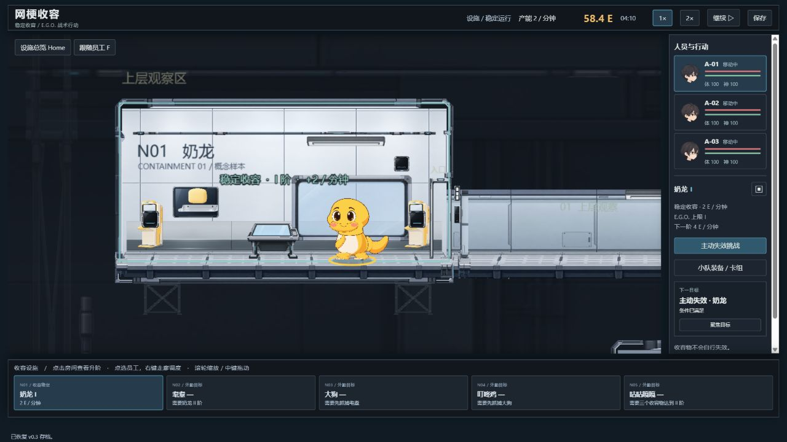
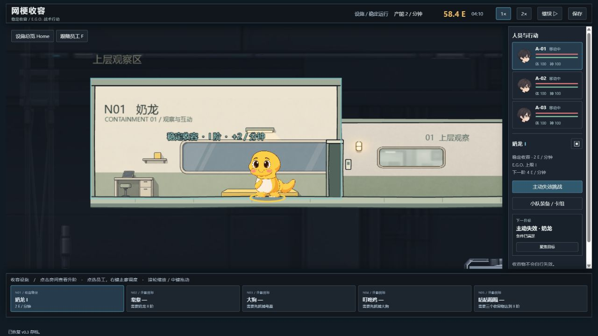
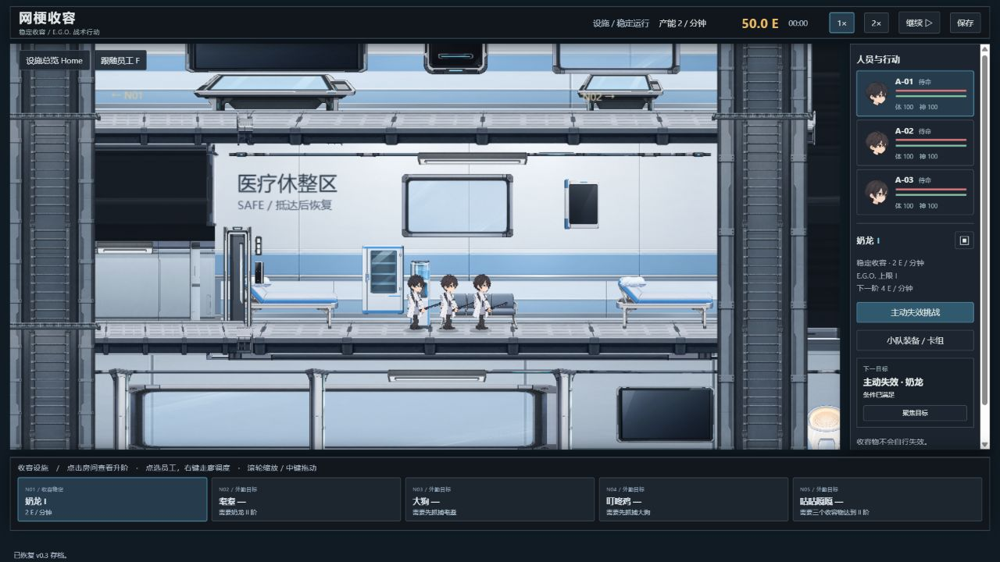
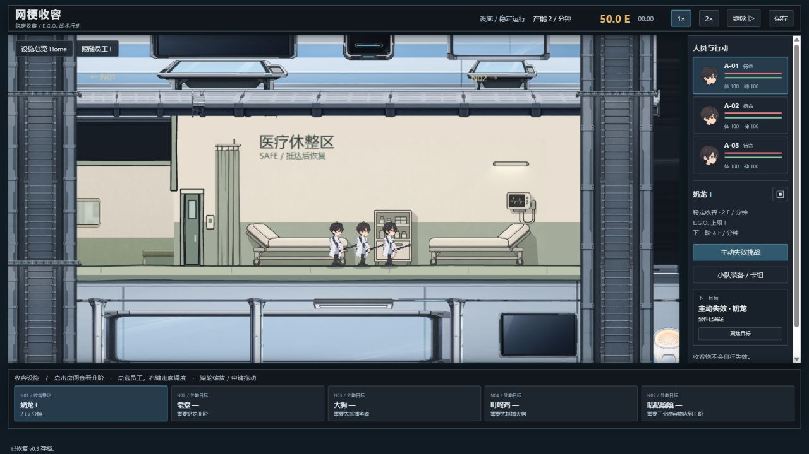
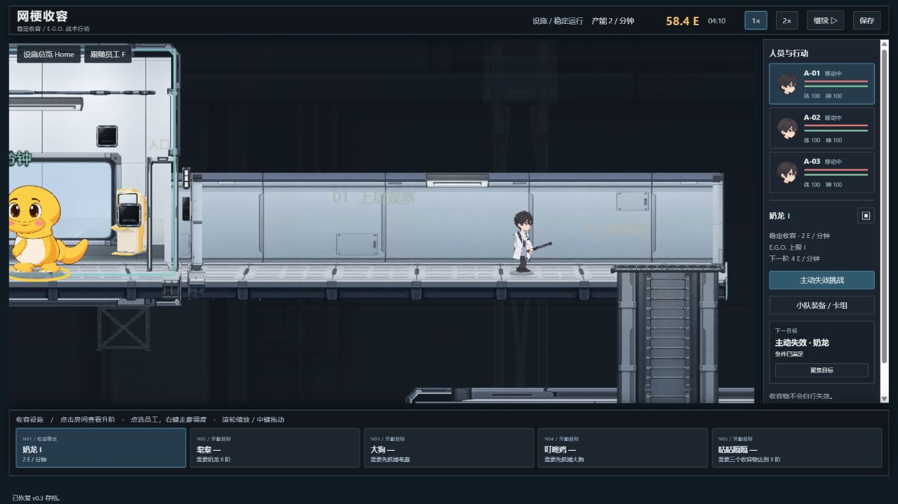
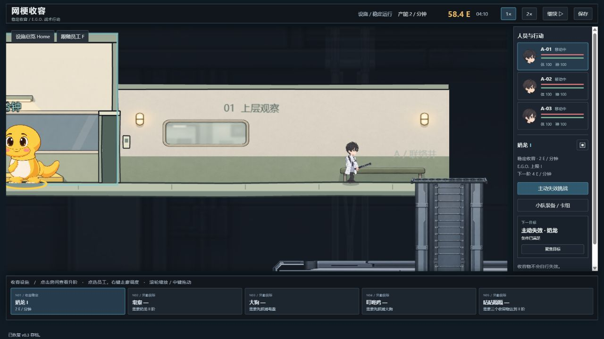
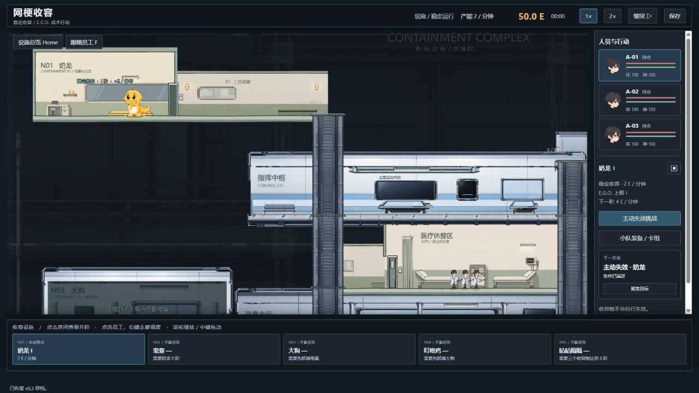

基地环境样板 · 真实运行对比
只替换奶龙收容室、医疗休憩区与连接走廊。下图均为 Phaser 实际运行截图；旧版通过同一渲染器的 DEV 对照开关重现，每组保持同镜头和暂停状态。角色没有烘焙进背景。
奶龙收容室

替换前：原工业模块
替换后：手绘墙面、简化结构、真实角色医疗休憩区

替换前：原工业模块
替换后：手绘墙面、简化结构、真实角色连接走廊

替换前：原工业模块
替换后：手绘墙面、简化结构、真实角色同画面整合
奶龙、走廊员工与三个样板区域。中部指挥室和联络井属于未替换区域。

独立新档的三名真实员工与医疗床比例对照。
实测完成通道移动、暂停改令和恢复后转向。直接点击 SAFE/ROOM 的原有命令限制记录于验收文档，本轮没有修改该玩法边界。